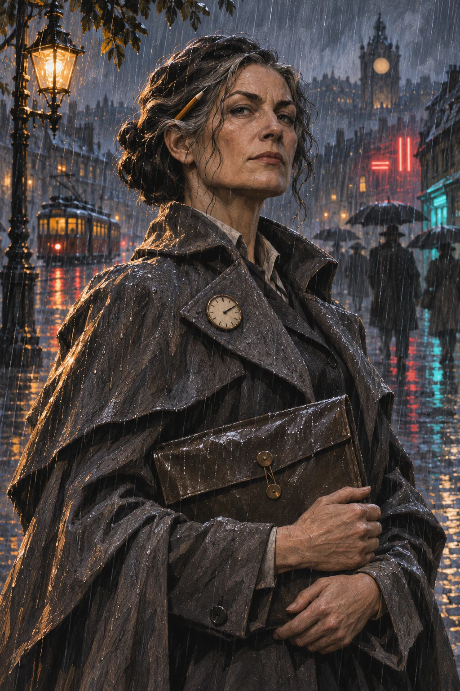

Найти Савелия у шлюза и узнать, кто и зачем ведёт двух других охотников.
Густав Нелль

Хельга МеллерМатвей Корд
Повороты сюжета в этот вечер
Посеять сегодня
Вдова наняла гончих. Матвей на мосту говорит: «Мне звонит женщина. Не называется. Говорит, где вы были вчера. Вдова ведь тоже Рун, а?»
Поворот: В гробу — агент
Хоронят Савелия Руна, и все видят только загадку: почему покойник стоит у задней ограды. На деле в гробу лежит Юлиан Корд, агент «Точного часа», выписавший полис. Рост сто семьдесят один, синее пальто «Бранд и сын» — подарок брата. Вдова опознала его «по пальто и проездному» и от осмотра лица отказалась.
На мосту шлюза объявление о пропаже кладут рядом с листом опознания: рост и пальто совпадают. Густав добавляет, что тело принесло течением от Сухого причала. Если Матвею показывают обе бумаги, он садится на перила: «Пальто от Бранда. Я ему его подарил». Пусть стол сам поймёт, кто лежит под чужим именем. Если бумаги на мосту не сложили, это можно сделать перед Матвеем в седьмом вечере.
После него: Оба охотника теряют свои причины: Хельга понимает, что Рун не мошенник, а Матвей — что Рун не убийца. Тот, кто им это покажет, меняет расклад на крышах. А у вдовы появляется ложь, которую уже не спрятать: она хоронила не мужа, а агента, с которым делила деньги.
Поворот: Подпись с петлёй
Полис на сорок тысяч подписан «С. Рун», и кажется, что Савелий сам застраховал свою смерть — значит, он мошенник или соучастник. На деле за мужа расписалась Клара, при агенте Корде. Савелий пишет «Р» одной прямой чертой с крючком, без петли; у Клары «Р» всегда с круглой петлёй — и в записке отряду, и в полисе.
Хельга кладёт на перила моста страницу полиса № 4417: подпись «С. Рун» с круглой петлёй на «Р». Рядом ложатся записка Клары и конверт жалованья. Пусть стол сам сравнит три подписи. Если сделки с Хельгой не было, копию полиса она оставит на перилах, а в седьмом вечере Савелий сам узнает петлю: «Её петля. Она и в полисе так подписалась».
После него: Подлог становится доказуемым без признания: рука вдовы стоит на полисе мужа. Этот путь можно показать Хельге — и часовщики перестанут охотиться на Руна. Но вместе с подлогом становится ясно, почему Савелий не идёт в полицию: его настоящая подпись стоит на бумагах рядом с поддельной.
Трамвай № 3, 18:05, остановка «Шлюзовая». Билет в вашем кармане размок и склеился с соседним. Бюро и участок — на этой же улице, но шлюз — другой Латрен: здесь город меряет свой дождь. Вода стоит под мостом выше, чем вчера, и с шумом идёт сквозь чугунную решётку, на которой застревает всё, что несёт канал, — ветки, бутылки, шляпы. Стеклянная галерея дождемеров светится в сумерках, как аквариум: в ней рядами стоят высокие стеклянные трубки, и в каждой вода поднялась до новой риски. Говорят, смотритель шлюза записывает дождь столько лет, что сам стал похож на дождемер, — длинный, прозрачный и мокрый. В лужах на мосту красным дрожит неон «ШЛЮЗ ЗАКРЫТ». К перилам прилип чей-то размокший трамвайный билет. Над водой слышно, как внизу скребёт багор.
Подготовка и роли
Шкала вечера. Старт: ○ 0, □ 4, △ 3. Прибавьте ○ +2 после вчерашнего П (+1 после Ч) и ○ +1 за вчерашний ✓; △ +2 после вчерашнего П, если Матвей ещё не знает. После сцен 1 и 2 — время: □ +2, △ +1. Осведомитель □ +2 после сцены 2. Сравнение перед сценой 3 как всегда: ○ не меньше обеих — отряд первым; ничья — в пользу отряда. □ больше ○ — часовщики разобрали койку; △ — Густава оттеснили на лестнице; обе — Хельга и Матвей едва не дерутся, Густав молчит. Матвей знает — △ −2 сразу. Хельга знает (путь В) — отметьте на карте финала. Улики сцены 3 на шкалу не идут. Клара не появляется, только звонок: её наводка точна, потому что она знает мужа. Не делайте её зловещей: она вежлива и устала. Раннее обвинение Клары перед Фальком: заявление он примет, но без живого Руна или бумаги дела не откроет; Клару вызовут и отпустят; Подозрение — только если он видел две улики одного пути.
Роман Иврен
Ванда Гесс
Казимир Лотт
Сцена 1 · 45 минут
Решётка
Внизу, у самой решётки, по колено в плавучем мусоре стоит смотритель шлюза — длинный, в клеёнчатом фартуке до сапог — и подтягивает багром то, что застряло между прутьями. Из нагрудного кармана у него торчат стеклянные трубки, как карандаши у конторщика. На ящике под клеёнкой лежит толстая книга, придавленная камнем, чтобы её не листал ветер. Вода гудит в чугуне ровно и низко, и холод от неё пробирает сквозь подошвы. Решётку здесь чистят руками, по старому порядку шлюза: всё, что можно вернуть, смотритель сдаёт в участок по описи. Он слышит ваши шаги, но не оборачивается и продолжает тянуть багор.
Ведущий сначала ставит фишки: ○ 0, □ 4, △ 3, затем прибавляет наводку и вчерашние поправки из плана вечера. Если вчера Кларе сказали правду или часть, утром она сказала: «Он любит воду. Его крёстный — смотритель шлюза Нелль». Густав стоит у решётки по колено в плавучем мусоре и багром снимает чей-то утонувший зонт; спицы торчат, как рёбра. Красный «ШЛЮЗ ЗАКРЫТ» дрожит в луже у его сапог. «Двадцать миллиметров за ночь, — говорит он, не оборачиваясь. — Город тонет медленно. Вы с причала? Вода всегда несёт от Сухого причала к моей решётке. Всегда». Книга шлюза лежит на ящике под клеёнкой: если говорить с ним спокойно, он покажет страницу за 21 октября (книга шлюза: ○ +1). Верный вопрос — «Откуда течение несло тело?»: «С Сухого причала. Всю ночь. В десять минут седьмого оно лежало на решётке, пальто тёмно-синее. Снял сам. С тех пор сплю плохо» (○ +1). Услуга — помочь очистить решётку от досок: ○ +2, □ +1, △ +1; десять крон из конверта вместо услуги — ○ +2 без хода соперников. Густав то и дело поглядывает на верхнее окно галереи; Конрад ловит окно в видоискатель: в раме висит мокрый рукав дождевика. «К утру будет тридцать, — бормочет он. — Вода всегда приходит раньше, чем её ждут». В конце сцены ведущий вслух: □ +2, △ +1.
Выборы — и что будет дальше
Помочь Густаву очистить решётку и заработать его доверие (услуга ○ +2, □ +1, △ +1)
Решётку очищают вместе с Густавом: доски, ветки, чей-то утонувший зонт со спицами, как рёбра. Вода ледяная, багор тяжёлый. Густав работает молча, потом говорит, не оборачиваясь: «С Сухого причала. Всю ночь. В десять минут седьмого оно лежало здесь, пальто тёмно-синее. Снял сам. С тех пор сплю плохо». Доверие заработано руками, а соперники тем временем подобрались ближе.
Показать снимок с похорон: Густав узнаёт крестника и говорит прямее
Густаву показывают снимок с похорон. Он опирается на багор и долго молчит, глядя на мокрое лицо среди зонтов. «Крестник, — говорит он наконец. — Живой. Я так и думал, когда снимал того, с решётки. Рост не тот». Он говорит прямее, чем собирался: о течении, о синем пальто, о бессоннице. Взгляд его сам поднимается к верхнему окну галереи.
Спросить про верхнее окно и рукав дождевика
Густава спрашивают про верхнее окно, где в раме висит мокрый рукав дождевика. Он замирает с багром в руках. «Сушится, — говорит он слишком быстро. — Мой». И отворачивается к решётке. Рукав слишком короток для дождевика смотрителя и слишком знаком тем, кто видел беглеца на пожарной лестнице. Об окне Густав больше ничего не скажет, пока не поверит отряду.
Оставить Густава и пойти на мост, где уже слышны голоса
Густава оставляют у решётки и идут на мост, где уже слышны голоса: трамвай высадил кого-то в сером плаще, к сходням причалила лодка. Отряд успевает к началу разговора, а не к его концу. Густав смотрит вслед и бормочет своё: «Вода всегда приходит раньше, чем её ждут». Его книга и его доверие остаются позади, у решётки.
Проверка и путь без броска
Проницательность Сл 13: заметить, что Густав смотрит на верхнее окно галереи. Успех — отряд понимает, что наверху кто-то жил, и Густав вздрагивает: «Не ходите туда без меня». Провал — Густав отмалчивается, но мокрый рукав в окне виден всем. Без броска: Конрад или любой герой замечает рукав по виду из окна.
Если не получилось
Если Густав отмалчивается и книгу не показывает, на мост поднимается инспектор Фальк за отчётом о воде и говорит: «Отсюда я его и забрал» — книгу шлюза читают вслух при нём; ○ +1 за улику засчитывается, но Густав обижен и в сцене 3 отвечает только после услуги.
Сцена 2 · 45 минут
Две цены
Мост над шлюзом блестит мокрыми перилами, а на его каменной опоре белой краской выведены риски с годами: так здесь отмечают, докуда поднималась вода в большие разливы, и самая высокая риска — выше человеческого роста. Трамвай у моста звякает и останавливается; из передней двери выходит женщина в сером плаще с жетоном-циферблатом на лацкане и папкой в клеёнке под мышкой. Почти тут же с другой стороны к ступеням причаливает лодка: на корме двое грузчиков, на носу бригадир артели, без шапки, мокрый до плеч. Он выпрыгивает на ступени, не дожидаясь, пока лодку привяжут. Двое идут к вам с разных концов моста и смотрят не на вас, а друг на друга.
На мост одновременно: Хельга сходит с трамвая в сером плаще, Матвей причаливает на лодке с двумя грузчиками. Оба идут к отряду и косятся друг на друга. «Живой Рун стоит обществу ноль крон, — тихо говорит Хельга. — Мёртвый — сорок тысяч. Я работаю на ноль. Мы не ломаем двери, мы покупаем ключи». Она кладёт на перила страницу полиса и тяжёлый латунный ключ на шнурке: за то, что знает отряд, и за снимок на сутки (тогда завтра он не заменит верный вопрос; если была встреча «Ряды под стеклом» — просит ещё и пальто). Копия полиса: ○ +1; подпись «С. Рун» с круглой петлёй на «Р». Матвей стучит крюком по перилам: «Мой брат ушёл к Руну двенадцатого. Ещё раз: на кого вы работаете?» За честный ответ показывает записку Юлиана — «Рун. Треть — мало» (○ +1) и зонт Савелия, если тот у артели. Если с вечера 2 Кларе хоть раз говорили правду: «Мне звонит женщина. Не называется. Говорит, где вы были вчера. Вдова ведь тоже Рун, а?» Если в вечере 2 была драка, сперва извинение. Верный вопрос любому: «Кто вам платит?» (○ +1). Срезанный путь — лодка Густава к водяной двери галереи: Сила (Атлетика) Сл 12, ○ +2. Трамваем вдоль набережной Роман — без броска. Провал — ○ +1, △ +1. Если показать Матвею объявление рядом с листом опознания, он садится на перила, отсылает людей (△ −2) и долго молчит: «Пальто от Бранда. Я ему его подарил». Путь В, показанный Хельге: «Значит, мы искали не того подлеца». В конце сцены: □ +2, △ +1, осведомитель Хельги □ +2. Сравните фишки.
Выборы — и что будет дальше
Заключить сделку с Хельгой: страница полиса, ключ башни, снимок на сутки
С Хельгой заключают сделку: страница полиса и латунный ключ башни — за то, что знает отряд, и за снимок на сутки. Хельга кладёт ключ на перила: «Живой Рун стоит обществу ноль крон, мёртвый — сорок тысяч. Я работаю на ноль». На странице полиса подпись «С. Рун» с круглой петлёй на «Р» — не та рука, что на конверте жалованья. Снимок уходит в её клеёнчатую папку.
Заключить сделку с Матвеем: честный ответ за записку брата
С Матвеем меняются честно: на кого работает отряд — за записку брата. Ответ звучит вслух: на вдову. Матвей стучит крюком по перилам и достаёт записку: «Двенадцатого, девять вечера, Сухой причал, навес три, Рун. Треть — мало». Если вдове уже говорили правду, он добавляет: «Мне звонит женщина. Не называется. Говорит, где вы были вчера. Вдова ведь тоже Рун, а?»
Показать Хельге путь В — «Хельга знает»
Хельге показывают собранный путь подлога — бумаги, где за мужа расписалась рука вдовы. Хельга перечитывает их дважды, не повышая голоса, и закрывает папку. «Значит, мы искали не того подлеца», — говорит она. На крышах часовщики теперь будут целиться в Клару, а не отнимать Савелия у отряда. «Дверь башни я оставлю открытой. Запирать её от вас больше незачем».
Показать Матвею объявление о пропаже рядом с листом опознания — «Матвей знает»
Матвею кладут рядом объявление о пропаже брата и лист опознания: рост сто семьдесят один, пальто «Бранд и сын». Бригадир садится на перила, отсылает людей и долго молчит. «Пальто от Бранда. Я ему его подарил», — говорит он наконец. Теперь он знает, кто лежит в могиле Руна, и артель на крыши не поднимется. Матвей смотрит на воду: «Ещё раз. Кто его туда положил?»
Отказать обоим и уйти к галерее, откладывая полис на «Точный час»
Отказывают обоим — и Хельге, и Матвею — и уходят к галерее. Полис подождёт до «Точного часа». Хельга пожимает плечами и оставляет на перилах копию полиса: «Возьмите. Мне она не нужна, а вам пригодится». Матвей уходит к лодке с запиской брата в кармане и не оглядывается. Две цены не заплачены, но и два собеседника потеряны.
Проверка и путь без броска
Убеждение Сл 14: получить у Хельги полис без снимка. Успех — снимок остаётся у отряда. Провал — она настаивает на снимке. Срезанный путь — Сила (Атлетика) Сл 12 или трамвай № 3 вдоль набережной (Роман без броска). Без броска: отдать снимок на сутки.
Если не получилось
Если обе сделки сорваны (□ +1), Хельга всё равно оставляет на перилах копию полиса: «Почитайте. Может, поумнеете». Записку Юлиана Матвей цитирует вслух, отвернувшись, и повторяет медленно, пока кто-нибудь не запишет её слова.
Сцена 3 · 45 минут
Верхняя комната
Лестница в верхнюю комнату идёт прямо через галерею, между рядами дождемеров, и стеклянные трубки с обеих сторон стоят выше человеческого роста. У каждой на латунной табличке выбиты номер и год, когда её поставили; самым старым больше века. Раз в сутки смотритель переливает воду из трубок в мерный стакан и записывает миллиметры, а город по этим цифрам решает, открывать ли шлюз. Стекло вокруг потеет, ступени мокрые, сквозь щель в раме капает прямо на перила. Снизу, с лестницы, доносятся два голоса — женский, ровный, и мужской, громкий, — и спорят они о минутах.
Перед сценой ведущий сравнивает ○, □ и △ вслух и объявляет, кто был наверху первым. Улики этой сцены на шкалу не идут. Верхняя комната: койка среди стеклянных трубок, остывшая чашка, люк к крыше галереи открыт, и дождь капает на раскрытую книгу. Внизу на лестнице слышны Хельга и Матвей: «Три минуты, — говорит она. — Не пять». «Он мой, — гремит Матвей. — Скажи ещё, что он ваш». Если отряд пришёл первым (✓): Густав верит и тихо говорит: «Он ушёл к сестре. Аглая Мейр, суфлёр в «Фонаре». Скажете кому — сюда больше не приходите». Если раньше □: часовщики разобрали койку, и Густав молчит: «Миллиметры я скажу. Крестника — нет». Если раньше △: Густава оттеснили на лестнице, он сидит на ступеньке и молчит; Хельга и Матвей перекрикиваются внизу. Если □△: они едва не дерутся на лестнице; отряд уходит с билетом «Фонаря» из вечера 4 и без слов Густава. Отряд идёт по мокрым следам ботинок к люку и по крыше галереи, откуда виден трамвайный круг: трамвай № 1 к центру уже уходит, и на подножке мелькает высокий силуэт. Густав кивает на люк: «Всегда уходил по крыше. Мальчишкой — тоже». Если за столом Казимир Лотт, он кладёт копию полиса рядом с запиской Клары и говорит только то, что видно: «Петля на „Р“ одна и та же».
Выборы — и что будет дальше
Заплатить услугой или помощью Густаву, чтобы он назвал сестру
Густаву помогают ещё раз — с решёткой, с книгой, с мокрыми досками, — и он решается. «Он ушёл к сестре. Аглая Мейр, суфлёр в „Фонаре“. Скажете кому — сюда больше не приходите», — говорит он тихо, глядя на лестницу, где спорят Хельга и Матвей. Имя сестры теперь у отряда. Густав возвращается к дождемерам и записывает в книгу: «Посетители».
Подняться по люку и осмотреть крышу галереи
По люку поднимаются на крышу галереи. Мокрые следы ботинок ведут по черепице к краю, откуда виден трамвайный круг. Трамвай № 1 к центру уже отходит, и на подножке мелькает высокий силуэт. Густав внизу кивает на люк: «Всегда уходил по крыше. Мальчишкой — тоже». Куда идёт первый маршрут, знает в Латрене каждый: к центру, к театрам.
Остановить спор на лестнице, чтобы не потерять время
Спор на лестнице останавливают: встают между Хельгой и Матвеем, пока они не сцепились. «Три минуты, — говорит она. — Не пять». — «Он мой», — гремит Матвей. Их разводят по разным пролётам. Время сохранено, и никто не упал с лестницы. Но обе команды теперь хорошо разглядели отряд в свете фонаря над люком.
Прислушаться к тому, что кричат Хельга и Матвей, и запомнить их слова
На лестнице слушают, не вмешиваясь, и запоминают каждое слово. Хельга: «Три минуты. Не пять. Я считаю». Матвей: «Он мой. Скажи ещё, что он ваш». Из спора ясно, как далеко зашёл каждый: часовщики считают Руна мошенником, артель — убийцей брата. Ни один не говорит о вдове. Слова записаны, а Савелий тем временем уходит по крыше.
Проверка и путь без броска
Анализ Сл 12: по мокрым следам ботинок понять, что Савелий ушёл на крышу и оттуда на трамвай. Успех — отряд видит, что ушёл он считаные минуты назад. Провал — следы смазаны дождём. Без броска: Густав кивает на люк.
Если не получилось
Если отряд ничего не понял, Аглаю называет театральный билет из вечера 4, а Фальк, пришедший за отчётом, говорит: «Сестра у него в театре. В деле записано». Но Густав после этого не доверяет отряду.
Книга шлюза
Толстая книга смотрителя шлюза в клеёнчатом переплёте, с колонками «миллиметры» и «на решётке». Записи идут день за днём, без пропусков, одним и тем же почерком; уголки страниц сморщены от воды.
Что можно установить
Запись 21.X, 6:10: тело мужчины в тёмно-синем пальто на решётке, сообщено в участок. Течение всю ночь шло от Сухого причала.
Получение
Густав Нелль показывает книгу, если с ним говорят спокойно или помогают с решёткой. Бросок не нужен.
Запасной путь
Если Густав молчит, Фальк подтверждает, откуда привезли тело: «Отсюда я его и забрал». Густав может произнести запись вслух.
Записка Юлиана
Страница, вырванная из карманного календаря, исписана торопливым карандашным почерком с сокращениями. Матвей Корд держит её в клеёнчатом конверте во внутреннем кармане и, прежде чем показать, долго вытирает руки.
Матвей показывает записку на мосту шлюза за честный ответ на вопрос, на кого работает отряд. Бросок не нужен.
Запасной путь
Матвей уже цитировал её на причале. В вечере 7 наёмные ловцы артели носят переписанную копию, один бросает её, убегая.
Полис на 40 000
Заверенная копия страницы полиса «Точного часа» № 4417 на плотной гербовой бумаге, с круглой печатью и циферблатом в углу. Сложена вчетверо, немного подмокла по сгибам; внизу — подпись застрахованного.
Что можно установить
Застрахован Савелий Рун на 40 000 крон, выписан 2 сентября агентом Ю. Кордом, выгодоприобретатель К. Рун. Подпись «С. Рун» с большой петлёй на «Р».
Получение
Хельга Меллер отдаёт страницу за то, что знает отряд, или за снимок Савелия на сутки. Бросок не нужен.
Запасной путь
Если обе сделки сорваны, Хельга оставляет копию на перилах моста: «Почитайте. Может, поумнеете». Позже её дадут в «Точном часе» за слово «он жив» со снимком.
Изменения после решений
Если Отряд сказал Кларе в звонке вечера 5 правду (П). → Ночью у галереи разбивают стекло и уносят ключ от верхней комнаты; Густав запирает шлюз и в вечере 7 на лодке к парку не приходит. Клара знает и о театре: в вечере 6 она в зале «Фонаря».
Если Отряд показал Матвею объявление о пропаже рядом с листом опознания («Матвей знает») → △ −2; в вечере 7 к парку приходят только ловцы артели по её звонку, без грузчиков Матвея, а на крыши в финале артель не поднимается.
Если Отряд показал Хельге путь В («Хельга знает») → В финале часовщики стреляют в Клару, а не берут Савелия у героев. Ключ башни их задерживает: запертая дверь — на 2 раунда позже; если Хельга знает, дверь не запирают.
Если Обе сделки сорваны и □ получил +1 → Хельга оставляет копию полиса на перилах, но снимок не остаётся у отряда, а Матвей уходит с запиской брата.
Выдать в нужный момент
Страница полиса — Сделка с Хельгой на мосту шлюза (вечер 5) или позже в «Точном часе» за слово «он жив» со снимком.
Страница ночного журнала — Стель позволяет переписать страницу (сцена 2 вечера 2) или Матвей показывает свою копию (вечер 5).
Завершение вечера
Дождемеры переливаются, как стеклянные свечи, вода под мостом чернеет. Густав пишет в книгу: «28.X. 31 мм. Посетители». В 23:00 отряд звонит Кларе по номеру 4-17 и выбирает: правду (П), часть (Ч) или молчание (М); ведущий вписывает букву в пятую клетку ряда «Звонков». Клара слушает, переспрашивает названия и тихо говорит: «Скажите мне, где он».